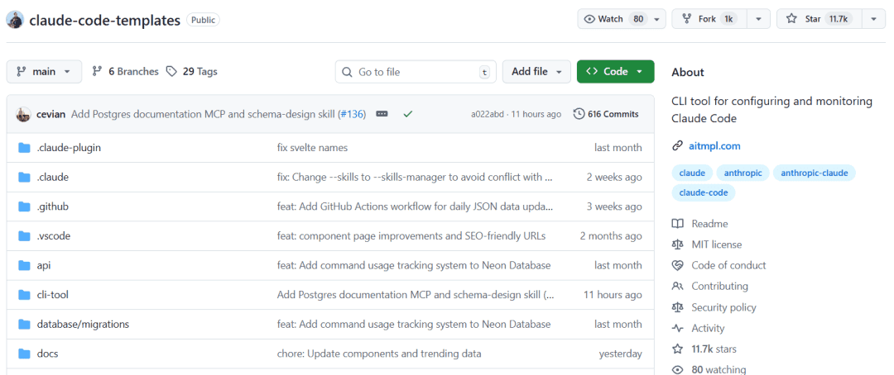
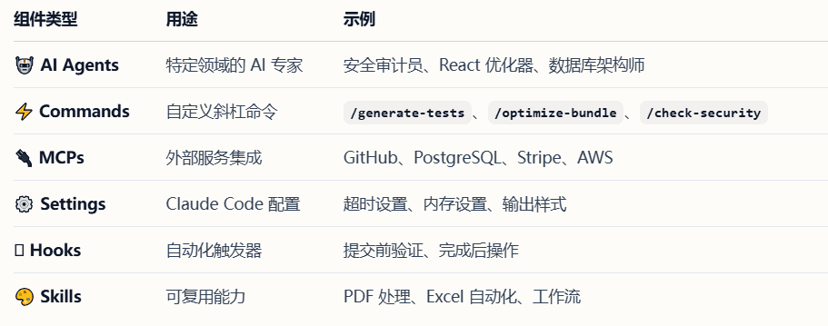
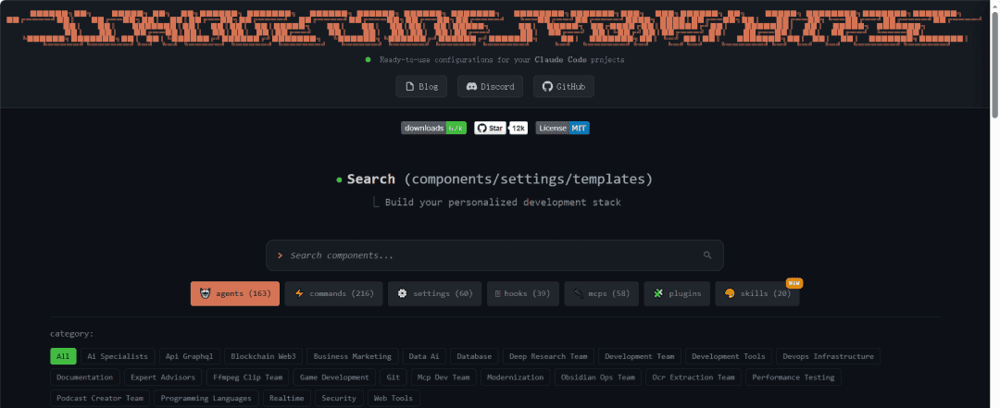
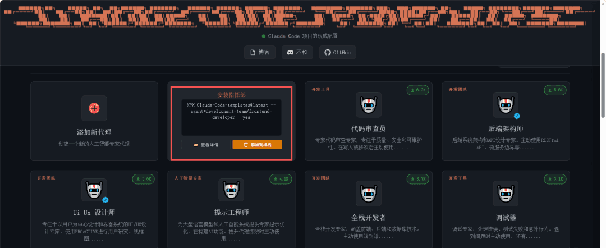
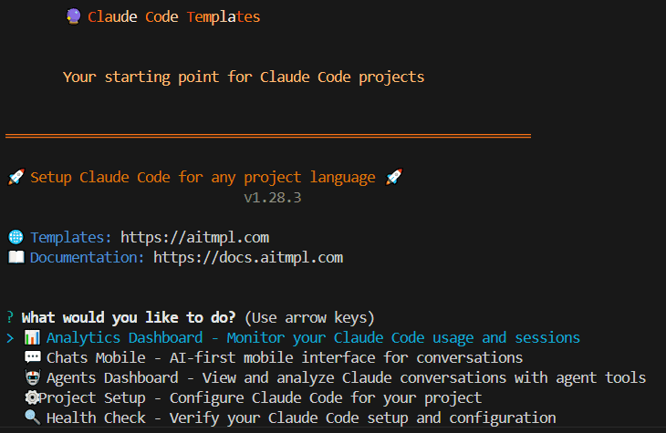
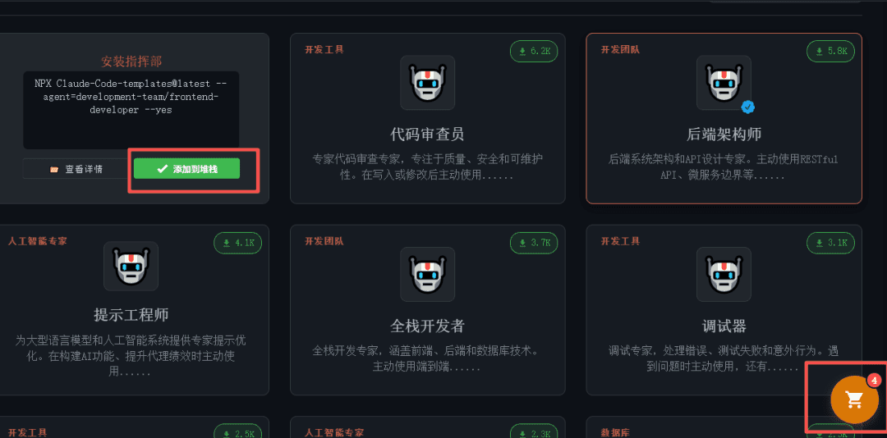
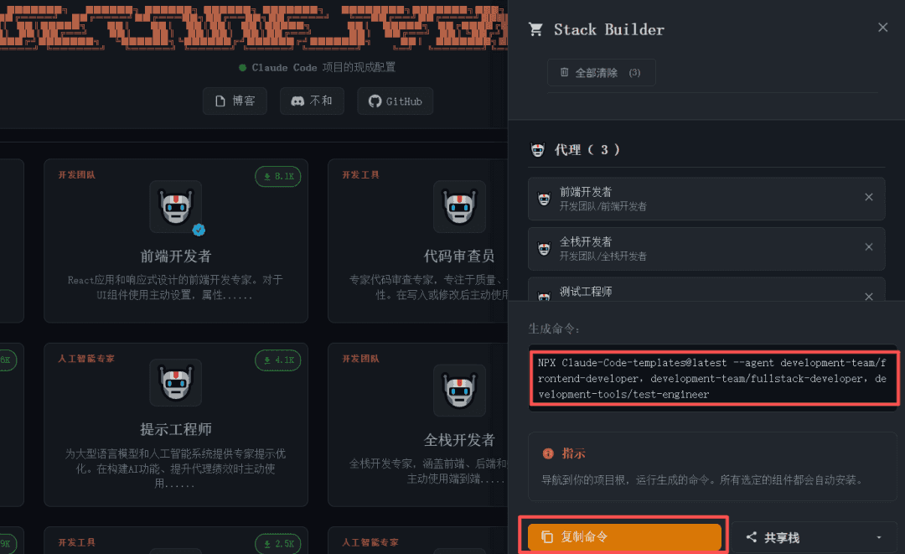

Claude-Code-Templates 组件库
智猩猩AI整理
编辑：六一
在所有AI编程助手中，Claude Code的能力毋庸置疑，但若想真正投入日常使用，从零开始配置Agent、设置各类命令、集成MCP服务器等初始化工作，仍是一段绕不开的、相当耗时的准备过程。
而今天要介绍的Claude-Code-Templates项目，正是为此而生。它在GitHub上已收获11.7k star，提供了一个开箱即用的强大组件库，内含500+预配置的Agents、Commands、钩子脚本及热门的Claude Skills。开发者无需重复配置，即可快速搭建开发环境，从而将精力完全聚焦于业务逻辑的实现。

- 项目链接：
https://github.com/davila7/claude-code-templates
01
项目介绍
Claude-Code-Templates项目是Claude Code的开箱即用配置集。提供涵盖AI智能体、自定义指令、参数设置、钩子脚本、外部集成（MCP）及Skills的完整资源库，助力开发者提升工作效率。

除上述资源外，Claude-Code-Templates还包含强大的开发工具：
Analytics Dashboard：Claude Code会话的实时监控。
Conversation Monitor：实时查看Claude回复的界面，且支持安全的远程访问。
Health Check：全面的系统诊断。
Plugin Dashboard：管理插件和权限的统一界面。
项目配备了可视化网站，对所有资源进行了细致的分类。

对于想要使用的组件，可以直接复制相关命令用于后续运行，也可以查看其详细信息。

02
如何使用
由于项目的组件均采用npx进行管理，所以使用前需确保安装了Node.js。
使用方式非常简单，只需进入项目所在目录，在终端中运行一行代码即可。比如：
#运行交互式安装程序（推荐）
npx claude-code-templates@latest
这个命令会提供一个交互式的界面，可以通过键盘移动选择想要进行的操作。
除此以外，也可以直接安装特定组件：
# 安装完整开发组件
npx claude-code-templates@latest --agent development-team/frontend-developer --command testing/generate-tests --mcp development/github-integration --yes
# 安装指定功能组件
npx claude-code-templates@latest --agent development-tools/code-reviewer --yes
npx claude-code-templates@latest --command performance/optimize-bundle --yes
npx claude-code-templates@latest --setting performance/mcp-timeouts --yes
npx claude-code-templates@latest --hook git/pre-commit-validation --yes
npx claude-code-templates@latest --mcp database/postgresql-integration --yes小技巧：可以在可视化网站中把想安装的组件逐个添加到购物车，然后复制生成的命令进行一键安装，非常方便。


03
总结
Claude-Code-Templates不仅仅是一个“一键配置神器”，更是一个经过验证的最佳实践集合。以往需要反复查阅文档、手动调试的配置流程，现在几分钟内就能高质量完成，让开发者能够将宝贵的时间和精力从环境搭建中彻底解放出来，完全投入到创造性的编码工作中。无论你是Claude Code的新用户希望平滑起步，还是资深开发者寻求进一步提效，这个项目都值得你立刻尝试。
END